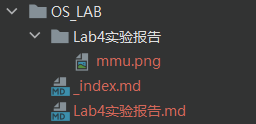

Hugo建站指南
文章模板
---
title: "{{ replace .Name "-" " " | title }}"
date: {{ .Date }}
lastmod: {{ .Date }}
author: ["Sulv"]
categories:
- 分类1
- 分类2
tags:
- 标签1
- 标签2
description: ""
weight: # 输入1可以顶置文章，用来给文章展示排序，不填就默认按时间排序
slug: ""
draft: false # 是否为草稿
comments: true
showToc: true # 显示目录
TocOpen: true # 自动展开目录
hidemeta: false # 是否隐藏文章的元信息，如发布日期、作者等
disableShare: true # 底部不显示分享栏
showbreadcrumbs: true #顶部显示当前路径
cover:
image: ""
caption: ""
alt: ""
relative: false
---
文章中插入图片
选择外链
直接.md文件插入外部图片的语法
内部储存
在.md文件同级目录下面建一个相同名字的文件夹，向其中加入所需要的图片，如下图

然后在文档中直接即可
文章修改封面
cover:
image: ""
caption: ""
alt: ""
relative: true
- 注意image里有两种方式
- 直接插入外链
- 在
.md文件同级目录下面建一个相同名字的文件夹，向其中加入所需要的图片，如下图，然后仿照posts/tech/123/123.png引用即可
引入外链
具体配置代码参见：https://www.sulvblog.cn/posts/blog/shortcodes/
- B站：
- {a{< bilibili BV1Ab4y117G2 >}}
- # 使用的时候把字母a去掉，我加上是为了防止被识别生效
- # BV1Ab4y117G2 指的是 bilibili 链接中的 bvid
- # 如果有集数（默认第一集），例如要播放第5集，则这样使用：{a{< bilibili BV1Ab4y117G2 5 >}}
- PPT：
- {a{< ppt src=“ppt网址” >}}
- # 使用的时候把字母a去掉，我加上是为了防止被识别生效
- 豆瓣：
- {a{< douban src=“直接放网址如：https://book.douban.com/subject/20394150/” >}}
- # 使用的时候把字母a去掉，我加上是为了防止被识别生效
Hugo操作
运行本地服务
hugo serve -d
生成public
hugo -F --cleanDestinationDir保证每次生成全新的